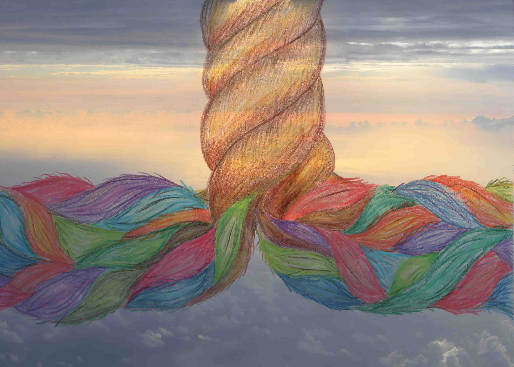

פרוייקט סיום תקשורת חזותית
הסעודה האחרונה
במסגרת קורס "מבוא לתקשורת חזותית", פרוייקט הסיום שלנו היה לקחת יצירה ישנה ולשנות אותה בהתאם לימים שלנו.היצירה שבחרנו היא הסעודה האחרונה מאת לאונרדו דה וינצ'י. בציור מתוארים ישו ו-12 משליחיו בסעודתו האחרונה של ישו בסעודה זו מודיע ישו לשליחיו כי הוא עומד למות וכי יש בינהם בוגד. ניתן לראות ביצירה כי הקומפוזיציה סטטית במרכז אך מאוד דינאמית בצדדיה. 12 שליחיו של ישו המוצבים משני צדדיו נמצאים בסערה עקב הבשורה הקשה, בנוסף ניתן לראות ברקע חלונות מהן ניבט נוף. דה וינצ'י בחר בנוף זה לייצג את גן העדן וישו מייצג מבחינתו את התגלמות גן העדן על פני כדור מהארץ. הצורניות של היצירה היוותה עבורנו השראה ,ביצירה ישו מצויר במרכז בצורת משולש המשדר יציבות ואיזון ובניגוד לכך משני צדדיו נמצאים השליחים בסערת רגשות וחוסר סדר צורני. במטרה להתייחס ליצירה באופן מופשט בחרנו בחבל כאובייקט המרכזי מכיוון והחבל מייצג עבורנו יציבות וחוזק מצד אחד אך כאשר הוא נפרם נוצרת סערה וחוסר סדר. את היצירה הסופית יצרנו בשילוב של ציור ביד בעיבוד גרפי בשילוב עם הרקע. הגוונים והצבעוניות של החבל לאחר שנפרם מייצג את השליחים השונים והבוגד הנמצא בינהם מיוצג על ידי פיסת חבל כהה היורדת מן המרכז אל צידו השמאלי של החבל הפרום ונעלמת מתחת לכולם כנתמע בינהם. הבחירה לרקע התבססה על רצונו של דה וינצ'י ליצג בחלונות את נוף גן העדן ,ולדעתנו הייצוג הנכון ביותר לגן עדן הוא על ידי שמיים ועננים.